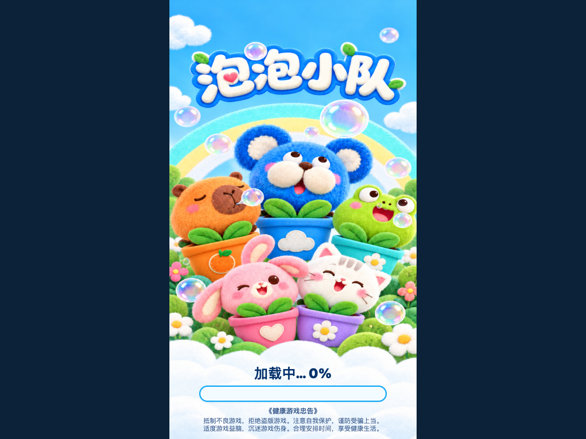
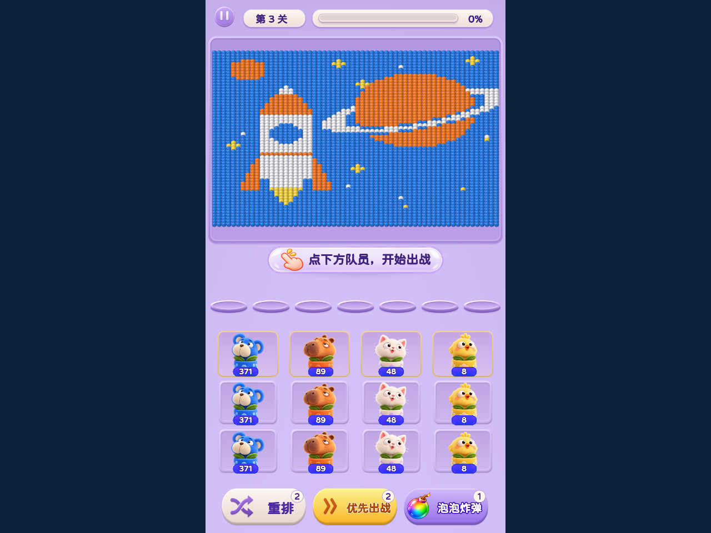
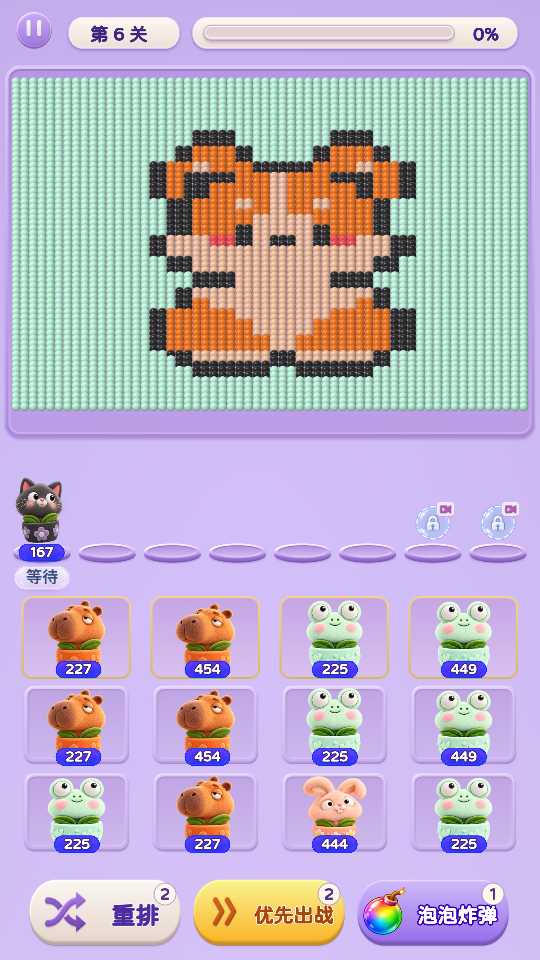
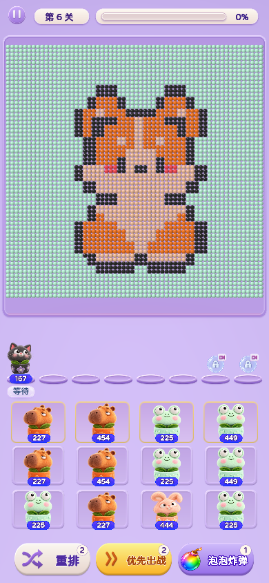

加载页与正常游戏画面同宽、同高，保持游戏外侧原有留白。统一使用用户选定的无白色缝线盆沿原图，底部显示真实加载进度和完整《健康游戏忠告》。下图对比同一宽窗口的加载页与游戏画面。打开试玩




抵制不良游戏，拒绝盗版游戏。注意自我保护，谨防受骗上当。
适度游戏益脑，沉迷游戏伤身。合理安排时间，享受健康生活。
唯一加载主图：用户上传原图 · 素材一致性记录。长屏加载页 · 小屏加载页 · 加载完成 · 加载失败反馈 · 验收记录。